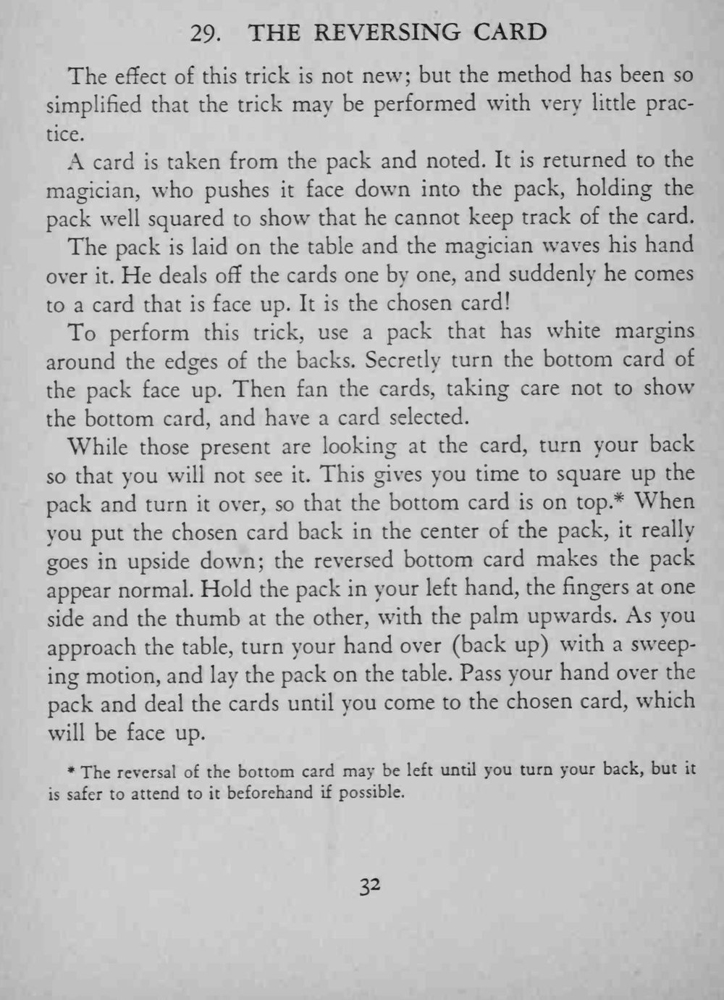

观众看着一张牌被插进牌堆中部，魔术师一挥手，把牌一张张发下去，忽然出现一张牌面朝上的牌，正是那张选牌。
翻底牌最好事先做好；若留到转身时再做，动作要快而稳。

The effect of this trick is not new; but the method has been so simplified that the trick may be performed with very little practice. A card is taken from the pack and noted. It is returned to the magician, who pushes it face down into the pack, holding the pack well squared to show that he cannot keep track of the card. The pack is laid on the table and the magician waves his hand over He deals off the cards one by one, and suddenly he comes to a card that is face up. It is the chosen card! To perform this trick, use a pack that has white margins around the edges of the backs. Secretly turn the bottom card of the pack face up. Then fan the cards, taking care not to show the bottom card, and have a card selected. While those present are looking at the card, turn your back so that you will not see it. This gives you time to square up the pack and turn it over, so that the bottom card is on top * When you put the chosen card back in the center of the pack, it really goes in upside down; the reversed bottom card makes the pack appear normal. Hold the pack in your left hand, the fingers at one side and the thumb at the other, with the palm upwards. As you approach the table, turn your hand over (back up) with a sweeping motion, and lay the pack on the table. Pass your hand over the pack and deal the cards until you come to the chosen card, which will be face up. * The reversal of the bottom card may be left until you turn your back, but safer to attend to beforehand possible.